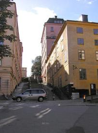
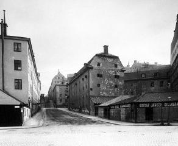
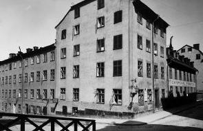
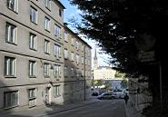
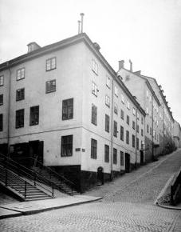
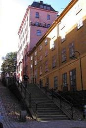

|
Pustegränd
Ur Stockholms gatunamn
|
År 1946 blev Pustegränd namn på den del av dåvarande Ragvaldsgatan, som låg norr om Hornsgatan, och som bland
Söderbor då vanligtvis gick under namnet Ragvaldsbacke (Ragwalds Backe 1800-1809). Genom namnändringen
återupplivades ett av de namn, som tidigare varit knutna till gatan.
Pustegränd kan vara ett namn av samma
karaktär som de närbelägna Besvärsgatan och Besvärsbacken (se Brännkyrkagatan). Namnet Pustegränd som är belagt i
Holms tomtbok 1679 (Puste gränden), är emellertid inte det tidigast kända namnet på den branta gatan mellan
stranden och Hornsgatan; det synes i stället ha varit Ragvaldsgatan (Ragwaldzgatun 1670).
Enligt Holms tomtbok
1679 låg i kvarteret Lappskon vid Pustegränden »Sal Rauadz [d. v. s. Ragvalds] gårdh». Utan att anföra några
bevis identifierar Wrangel honom med den Ragvald Kock som har gett upphov till namnet Kocksgatan. Hans identifiering
har accepterats av senare författare, som behandlat stockholmska
|
|


|
|

Söder Mälarstrand. Ragvaldsgatan 1-3 till vänster, nr 2 till höger.
|
|
gatunamn. Wrangels identifiering
måste betraktas såsom högst osäker. Sannolik är det den Ragvald Larsson som 1635 var rotemästare för
brandvakten i denna trakt som har givit upphov till namnet. Hans änka omtalas 1641.
Vid sidan av namnet Ragvaldsgatan förekommer från och med 1670-talets slut namnet Pustegränden. På ritningarna
i Holms tomtbok 1679 förekommer sålunda dels »Puste gränden» (se ovan), dels »Rawaldz eller Pwste Gränden». Under
återstoden av 1600-talet och under 1700-talet omtalas gatan omväxlande såson Ragvaldsgränd, Pustegränden, Ragvaldsgränd eller Puste backen eller Ragvaldsbacke.
|
Att namnen Ragvaldsgatan/gränd/backe och Pustegränden/backen på 1670-talet avsåg endast gatusträckningen norr om
Hornsgatan framgår av Holms tomtbok. Senare kom de att gälla även den del, som låg mellan Hornsgatan och
Sankt Paulsgatan; så är fallet på Tillaeus' karta 1733, som för gatan mellan stranden och Sankt Paulsgatan har
namnuppgiften »Rafwalds eller Pustegr[änden]».
Efter 1800-talets mitt tycks namnet Pustegränden försvinna till förmån för Ragvaldsgatan, som nu också kommer att
bli namn på gatan söder om Sankt Paulsgatan. De trappor son leder ner från Hornsgatan har
vanligtvis gått under namnet Ragvaldstrappor eller Ragvaldstrapporna.
|
På Tillaeus' karta 1733 markeras en brygga ut i
fjärden vid Pustegrändens mynning. År 1690 klagar man över at »Broon i Rafwaldz gränden ... alldeles är
nedersiunken» och begär därför »en Ny brygga». Sju år senar konstateras, att »Pustebacken eller Rawallz grend
är nedre widh Siön med en broo bebygd». Bryggan kom att kallas Ragvalds bro (1802-03). Namnet som var i bruk
åtminstone in på 1930-talet kom efter hand at användas om trakten närmast kring den plats där bryggan legat.
|
|

|
|

Ragvaldsgatan norrut till vänster. Hörnet med Brännkyrkagatan 8. 1908

2004. Pustegränd 2. Norrut
|
|
|

Ragvaldsgatan 4. Hörnet med Brännkyrkagatan 13. Trappor upp till Hornsgatan. 1904
|
|

Ragvaldsgatan 4-6. Trappor upp till Hornsgatan.
|
|
|
|
{kind=link}